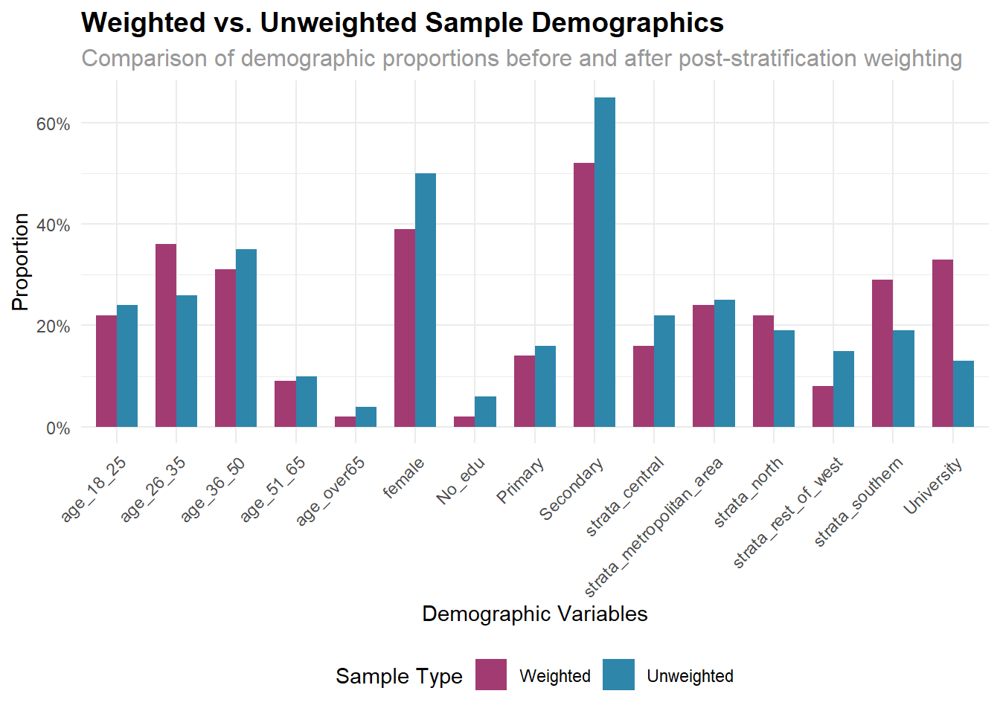
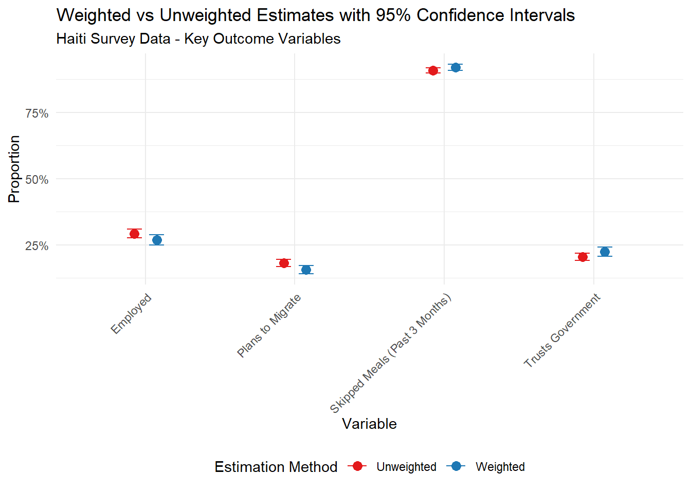

disposition | n |
|---|---|
answered | 6,112 |
blocked | 20 |
business | 784 |
does not exist | 222 |
no answer | 1,369 |
not active | 4,020 |
other | 29 |
rings busy | 55 |
voicemail | 16,717 |
Post-stratification Weighting to Recover Representative Estimates from Selective Samples
Motivation
A gold standard methodology in survey-based research is probability sampling in which people are contacted and surveyed at random from a list of the population. But strict adherance to probability sampling is seldom possible in the real world. For starters, response rates for surveys are often well below 10 percent, and respondents who answer and agree to participate are a selective sample that is likely to differ from the general population in terms of their demographic and socio-economic characteristics. Moreover, in many settings, there is no sampling frame or readily-available list of the population from which to sample. The end result is that the sample of respondents in the survey may look nothing like the general population that the researcher is interested in.
The challenge of generalizing findings from a selective sample to a larger population is not unique to survey research. Medical studies often involve intensive recruitment protocols in which only a selective subset of eligible patients are enrolled. And in tech, UX researchers often conduct feedback surveys or A/B tests on convenience samples whose characteristics differ from those of their user base.
In these and many other settings, researchers can use a procedure known as post-stratification weighting to recover representative estimates. While the algorithm is complicated, the idea is simple: identify a set of weights such that the weighted sample matches the reference population in terms of its average demographic make-up and other variables of interest. Assuming these weights capture all the sources of confounding between the sample and reference population, analysis on the weighted sample will be unbiased.
Use Case: Random Digit Dialing Phone Survey in Haiti
In 2024, the U.S. State Department commissioned a phone survey in Haiti to better understand socio-economic and humanitarian outcomes in the country. The survey was administered by between October 28 and December 12, 2024 and relied on a random-digit-dialing (RDD) approach to contact and survey respondents. The use of RDD implies several sources of selection: 1) having a working phone, 2) answering the phone, and 3) consenting to the survey. Indeed, of the more than 30,000 call attempts, only 6,112 were answered.
And of the 6,112 answered calls, 3,144 (51 percent) were met with a consenting respondent:
consent | n |
|---|---|
0 | 2,968 |
1 | 3,144 |
Weighting Algorithm
The goal is to identify a set weights such that the weighted marginal distributions for key demographic variables in our sample match the distributions of Haiti’s actual population.
To do this, we need reference distributions for these variables that constitute our best estimate of Haiti’s actual population distributions. For this, we’ll use the weighted sample distributions in listed in Table 1 of the technical appendix for the Latinobarometer’s 2021 Haiti survey, which which was weighted to represent Haiti’s population based on census data they were able to access in country.
Now that we have our reference distributions, we use the rake command in R to identify post-stratification weights. The rake command uses an Iterative Proportional Fiting (IPF) algorithm to identify weights that produce marginal distributions that match the reference population. See here for a helpful tutorial on this procedure, or click the code-fold for line-by-line annotation.
Code
library(survey)
# define data as survey data without weights
data.svy.unweighted <- svydesign(ids=~1, data=data)
# define marginal distributions using weighted sample summarized in Table 1 2021 Haiti Latinobarometer weighted sample, p. 4-5
# https://www.vanderbilt.edu/lapop/haiti/ABHTI2021-Technical-Report-v1.0-FINAL-eng-110921.pdf
Gender.dist <- data.frame(Gender = c("Female", "Male"),
Freq = nrow(data)*c(1563/3088,1525/3088))
Strata.dist <- data.frame(Strata = c("Metropolitan area", "Northern", "Central", "Rest of West", "Southern"),
Freq = nrow(data)*c(650/2605, 491/2605, 584/2605, 385/2605, 495/2605))
Age.dist <-data.frame(Age = c("18 to 25", "26 to 35", "36 to 65", "65+"),
Freq = nrow(data)*c(743/3088, 808/3088, (583+549+257)/3088, 148/3088))
Education.dist <- data.frame(Education = c("None", "Primary", "Secondary", "University"),
Freq = nrow(data)*c(194/2910, 459/2910, 1894/2910, 363/2910))
# identify weights using IPF algorithm
data.svy.rake <- rake(design = data.svy.unweighted,
sample.margins = list(~Gender, ~Strata, ~Age, ~Education),
population.margins = list(Gender.dist, Strata.dist, Age.dist, Education.dist))
# check distribution of weights
#summary(weights(data.svy.rake))
# Create a summary data frame of the weights
weights_summary <- data.frame(
statistic = names(summary(weights(data.svy.rake))),
value = round(as.numeric(summary(weights(data.svy.rake))), digits = 2)
)
weights_summary |>
gt() |>
tab_header(title = "Distribution of Weights")| Distribution of Weights | |
|---|---|
| statistic | value |
| Min. | 0.15 |
| 1st Qu. | 0.46 |
| Median | 0.80 |
| Mean | 1.00 |
| 3rd Qu. | 1.29 |
| Max. | 8.63 |
Code
# trim weights to avoid overly small or large weights (to avoid overextrapolation)
data.svy.rake.trim <- trimWeights(data.svy.rake, lower=0.2, upper=5, strict=TRUE)
# define weight variable based on raking
data$weight <- weights(data.svy.rake.trim)Results
Now we can compare the weighted and unweighted samples. The marginal distributions for the weighted sample closely match those of the weighted sample in the 2021 LAPOP Haiti survey.
Code
# calculated weighted demographics & compare to unweighted
# weighted demographics match those of Latinobarometer Haiti 2021
weighted_demographics <- data %>%
summarize(
sample_size = nrow(data),
#Gender
female = weighted.mean(gender==1, weight, na.rm=TRUE),
#Age
age_18_25 = weighted.mean(age==1, weight, na.rm=TRUE),
age_26_35 = weighted.mean(age==2, weight, na.rm=TRUE),
age_36_50 = weighted.mean(age==3, weight, na.rm=TRUE),
age_51_65 = weighted.mean(age==4, weight, na.rm=TRUE),
age_over65 = weighted.mean(age==5, weight, na.rm=TRUE),
# Strata
strata_metropolitan_area = weighted.mean(Strata=="Metropolitan area", weight, na.rm=TRUE),
strata_north = weighted.mean(Strata=="Northern", weight, na.rm=TRUE),
strata_central = weighted.mean(Strata=="Central", weight, na.rm=TRUE),
strata_rest_of_west = weighted.mean(Strata=="Rest of West", weight, na.rm=TRUE),
strata_southern = weighted.mean(Strata=="Southern", weight, na.rm=TRUE),
#Education
No_edu = weighted.mean(Education == "None", weight, na.rm=TRUE),
Primary = weighted.mean(Education == "Primary", weight, na.rm=TRUE),
Secondary = weighted.mean(Education == "Secondary", weight, na.rm=TRUE),
University = weighted.mean(Education == "University", weight, na.rm=TRUE),
) %>%
round(2)
# unweighted demographics
unweighted_demographics <- data %>%
summarize(
sample_size = nrow(data),
#Gender
prop_female = mean(gender==1, na.rm=TRUE),
#Age
age_18_25 = mean(age==1, na.rm=TRUE),
age_26_35 = mean(age==2, na.rm=TRUE),
age_36_50 = mean(age==3, na.rm=TRUE),
age_51_65 = mean(age==4, na.rm=TRUE),
age_over65 = mean(age==5, na.rm=TRUE),
# Strata
strata_metropolitan_area = mean(Strata=="Metropolitan area", na.rm=TRUE),
strata_north = mean(Strata=="Northern", na.rm=TRUE),
strata_central = mean(Strata=="Central", na.rm=TRUE),
strata_rest_of_west = mean(Strata=="Rest of West", na.rm=TRUE),
strata_southern = mean(Strata=="Southern", na.rm=TRUE),
#Education
no_edu = mean(Education == "None", na.rm=TRUE),
Primary = mean(Education == "Primary", na.rm=TRUE),
Secondary = mean(Education == "Secondary", na.rm=TRUE),
University = mean(Education == "University", na.rm=TRUE),
) %>%
round(2)
unweighted_demographics <- gather(unweighted_demographics, varname, unweighted, 1:length(unweighted_demographics)) %>%
select(unweighted)
demographics_out <- weighted_demographics %>%
gather(., varname, weighted, 1:length(weighted_demographics)) %>%
bind_cols(unweighted_demographics)
demographics_out |>
gt() |>
tab_header(title = "Weighted vs. Unweighted Sample Demographics")| Weighted vs. Unweighted Sample Demographics | ||
|---|---|---|
| varname | weighted | unweighted |
| sample_size | 3127.00 | 3127.00 |
| female | 0.50 | 0.39 |
| age_18_25 | 0.24 | 0.22 |
| age_26_35 | 0.26 | 0.36 |
| age_36_50 | 0.35 | 0.31 |
| age_51_65 | 0.10 | 0.09 |
| age_over65 | 0.04 | 0.02 |
| strata_metropolitan_area | 0.25 | 0.24 |
| strata_north | 0.19 | 0.22 |
| strata_central | 0.22 | 0.16 |
| strata_rest_of_west | 0.15 | 0.08 |
| strata_southern | 0.19 | 0.29 |
| No_edu | 0.06 | 0.02 |
| Primary | 0.16 | 0.14 |
| Secondary | 0.65 | 0.52 |
| University | 0.13 | 0.33 |
Which we can visualize as follows:
Code
demographics_out |>
# Remove sample_size row since it's not a proportion
filter(varname != "sample_size") |>
# Pivot to long format for ggplot
pivot_longer(cols = c(weighted, unweighted),
names_to = "sample_type",
values_to = "proportion") |>
# Create the plot
ggplot(aes(x = varname, y = proportion, fill = sample_type)) +
geom_col(position = "dodge", width = 0.7) +
scale_fill_manual(values = c("weighted" = "#2E86AB", "unweighted" = "#A23B72"),
labels = c("Weighted", "Unweighted")) +
scale_y_continuous(labels = scales::percent_format()) +
labs(
title = "Weighted vs. Unweighted Sample Demographics",
subtitle = "Comparison of demographic proportions before and after post-stratification weighting",
x = "Demographic Variables",
y = "Proportion",
fill = "Sample Type"
) +
theme_minimal() +
theme(
axis.text.x = element_text(angle = 45, hjust = 1),
legend.position = "bottom",
plot.title = element_text(size = 14, face = "bold"),
plot.subtitle = element_text(size = 12, color = "gray60")
)

Substantive Analysis
How does the use of post-stratification weights affect our results? Figure 2 shows the weighted versus unweighted means for four key outcome variables — employed, plans to migrate to the U.S. in the next year, experiencing food insecurity, and trusts the Haitian government. As it turns out, the weighted vs. unweighted means are broadly similar, suggesting that the sources of selection into our sample (summarized in Figure 1, above) are not strong determinants of our outcomes of interest and thus not particularly consequential. But there was no ex-ante guarantee that this would be the case.
Code
library(ggplot2)
# Prepare data for plotting
plot_data <- substantive_analysis |>
select(variable, unweighted_mean, unweighted_ci_lower, unweighted_ci_upper,
weighted_mean, weighted_ci_lower, weighted_ci_upper) |>
pivot_longer(cols = -variable, names_to = "measure", values_to = "value") |>
separate(measure, into = c("weight_type", "statistic"), sep = "_(?=mean|ci)") |>
pivot_wider(names_from = statistic, values_from = value) |>
mutate(
weight_type = case_when(
weight_type == "unweighted" ~ "Unweighted",
weight_type == "weighted" ~ "Weighted"
)
)
# Create the plot
comparison_plot <- ggplot(plot_data, aes(x = variable, y = mean, color = weight_type)) +
geom_point(position = position_dodge(width = 0.3), size = 3) +
geom_errorbar(aes(ymin = ci_lower, ymax = ci_upper),
position = position_dodge(width = 0.3), width = 0.2) +
labs(
title = "Weighted vs Unweighted Estimates with 95% Confidence Intervals",
subtitle = "Haiti Survey Data - Key Outcome Variables",
x = "Variable",
y = "Proportion",
color = "Estimation Method"
) +
scale_y_continuous(labels = scales::percent_format(accuracy = 1)) +
theme_minimal() +
theme(
axis.text.x = element_text(angle = 45, hjust = 1),
legend.position = "bottom"
) +
scale_color_manual(values = c("Unweighted" = "#E31A1C", "Weighted" = "#1F78B4"))
print(comparison_plot)
